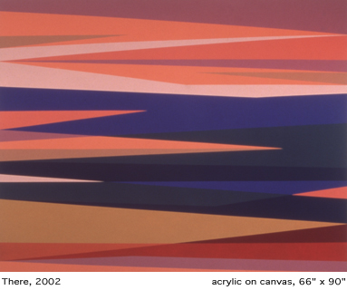

A constant in Odili Donald Odita�s oeuvre is his engagement with
the duality of cultural codes, which make up our social representations.
The romanticized discourse about the supposedly other, for example,
exoticizes anything strange in order to ostracize it socially.
The artist poses the question what it means �to be black�
with the two wall paintings �Body/Space� and �Two
Black Alike and Apart Become Different� in the back room of the
gallery. He shows with these two works that there are no perceptions
of blackness that are identical, similarly to two entirely identical
black quadrants, but that the circumstance of being called �black�
signifies a cultural phenomena rather than a matter of pigments. �The
black canvas is simple, but the discourse of black is extremely complex,�
says the artist in an interview reprinted in his last catalog.
The artist, who lives now in north Florida, already questioned with
his work entitled �Birth of a Mythic Being� in 1999 the
one-sided representation of the African as an anthropological research
object. He referred to a work by Adrian Piper called �Mythic Being�
from the year 1970: Odita selected a representation of a young African
woman from a standard edition for Ethnology and reproduced copies of
her in an Andy Warhol-like fashion before he assembled her in totem
pole style on the gallery wall. In front of the collage he placed a
dirt pile that seemed to make reference to the birth site of the �mythological
black creature� in pre-historic Africa. However, in reality the
fictional mound consisted of potting soil and ironically remarked upon
the artificiality and mythological uplifting of nature in Western civilization
discourse, which until today celebrates the African as the epitome of
naturalness.
This two-edged bipolarity of cultural codes is also visible in Odita�s
abstract paintings, which can be read like sheets of electronic music
(with a lot of drums and bass as it seems to me): Color turns into pure
rhythm and structures the picture from within.

The artist combines in the seemingly cool arrangements of parallel and
pointedly approaching color ribbons and fractured geometric shapes synthetic
and organic colors that hint at different cultural contexts: signal
colors of the pop as well as the ibo culture of present-day Nigeria
from where Odita�s family originates. He points out the double
inheritance of western and African abstraction for which he opens new
space in his works. The three works, �There,� �Heat,�
and �Possible World,� which were completed in the last months
and are exhibited here for the first time together, draw their tension
especially from the interplay of different traditions of the African,
European, and North American Modernism.
Odita synthesizes developments within Afro-American modernism, which
counts as its predecessors artists like the Nigerian Uzo Egonu and the
South-African Ernest Mancoba. Egonu and Mancoba, whose abstract paintings
can be found in the ritual clothing codes and murals of their countries
of origin, gave much impulse to the European avant garde since the 1940s;
one in the circle of the Goldsmith College in London and the other within
the artist group COBRA.
These painters juxtapose their artistic abstractions�which they
derive from one social space�with the totalizing project of western
Modernism, which reflects the objective laws of the universe as mysticism
of the elementary within the abstraction of the art work.
Odita�s canon of forms reminds one of the paintings of the Igbo
women in Nigeria, which are called Uli-painting and which symbolize
a body as well as a wall painting technique. But this Africa is transmitted
foremost aesthetically. Africa is for Odita, who grew up in the United
States, consequently only one of several references which were shaped
by his experience as Afro-American in a predominately white society:
�My Igbo-ness is one of the many things that help shape what I
am. Though I didn�t grown up in Nigeria . . . there is the rupture
between experience and perception about being black in America, and
being a first generation African family in the US.�
Odita�s paintings seem to us to be filled with a nearly vibrating
plasticity if we don�t try to approach them from the point of
a central perspective (Renaissance). In this sense one can call Odita�s
artistic point of view truly eccentric.
His works remind of an assignment that Paul Klee once gave his students
when he made them paint tracks from different perspectives. The perspective
of the observer changes so radically with his angle of vision due to
the release of the central perspective that infinitive variations of
lateral optics appear.
Odita�s abstractions likewise enable the observer a reading of
multiple and changing perspectives, which allow the center to move and
to open a mobile three-dimensional room for the viewer: stripes seemingly
ending in the void can all of a sudden be spatially recognized.
This way of composition parallels the polyphony in music: In the polyphony
a multitude of independent voices merge �similar to strong parallel
color lines in the painting�into a constantly repeating circular
movement. The absence of a hierarchical center�a leading instrument
or a soloist�reflects, for example, in the polyphone antiphonal
singing of the Aka-pygmies the social space of its members.
Likewise, Odita�s monochrome paintings structure the surrounding
room in an almost architectural fashion: The five works called installation
without title, which are exhibited in the south terrain of the gallery
and which were also shown a few weeks ago in Vienna and Frankfurt, are
simultaneously paintings and sculptures. They remind of windows, gates
and buildings and internalize the invisible cities through which we
imagine them.
His imaginary landscapes and cities define Odili Donald Odita as a third
space in which the all too tight concept of western Modernism is extended
towards other cultural codes: �There are other worlds outside
of this world, and that notion calls into question what Modernism is�and
how Modernism was mined outside of itself and brought into the center
space. But this process of presentation in the center ignores�or
doesn�t regard the extremities anymore.�
(Translated by Elisabeth Simmons)
|